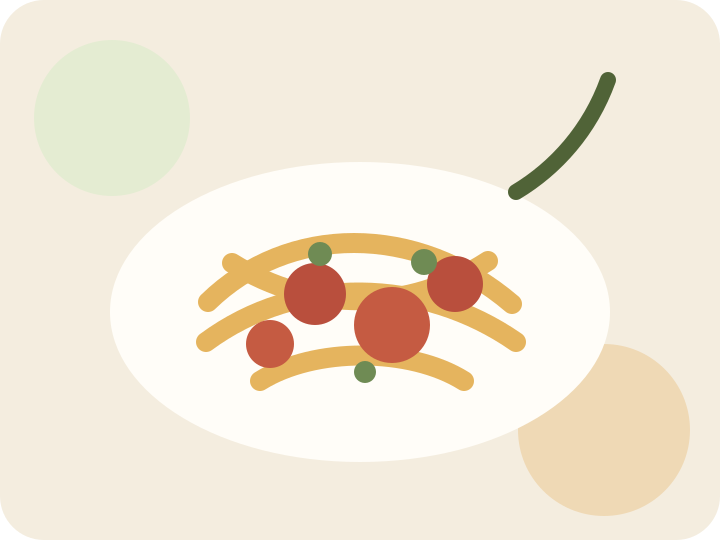

Aftensmad
Klassisk bolognese
En varm og genkendelig aftensmad med fokus på overskuelige ingredienser og tydelige trin.

En varm og genkendelig aftensmad med fokus på overskuelige ingredienser og tydelige trin.
